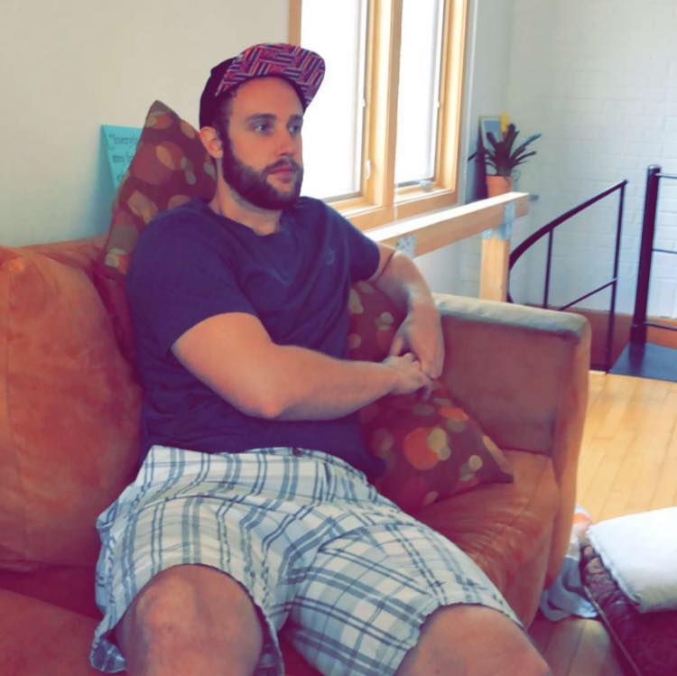

About Me

My name is Peter Krumb, and I am an aspiring software developer currently enrolled in Northwestern's Full Stack coding bootcamp. I've learned a ton thus far, including web development basics such as HTML, CSS, and JavaScript and am steadily cruising on to more extensive parts of JavaScript such as Node and React. My background is in the hospitality industry, however currently I'm working to break into tech industry as I see much potential for growth, opportunities, and learning in general. I love a challenge and this bootcamp has re-acquainted me with the learning process again.